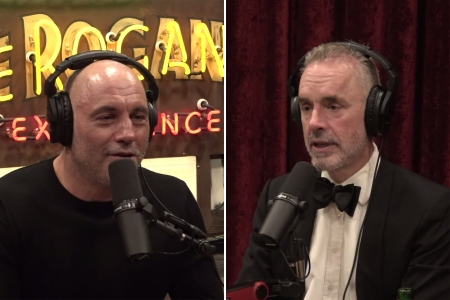
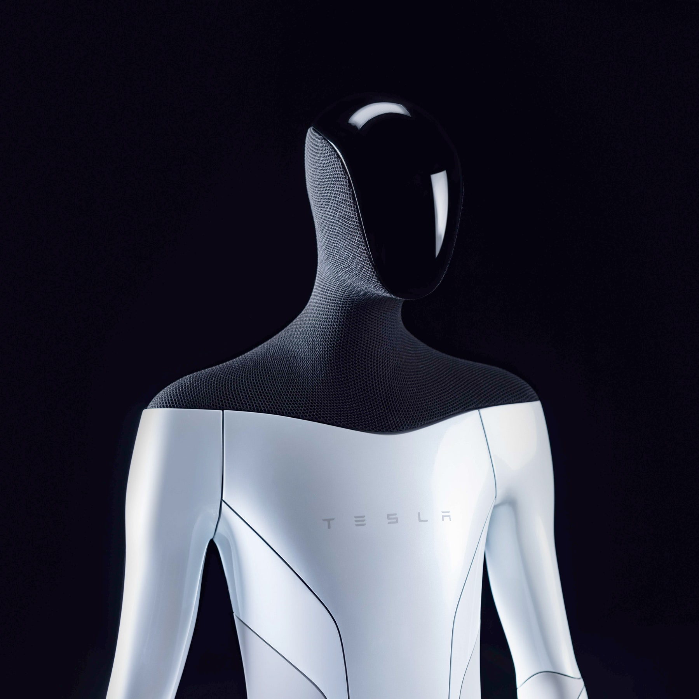

For the record, I may be wrong about everything I say in this blog. I'm just a guy trying to make sense of the world.
1.3.22
Spent all day yesterday trying to get the OpenAI API to work. Ran into countless issues. Will revisit later. In the meantime, I love this song, and I made some cool ai artwork. Happy 117 day
Also, I wrote a screenplay with A.I. today on /rainbow
1.17.24
Pokedex App with Chat GPT Plus!
I've spent the past couple of days coding a Pokedex app using an API. Chat GPT plus has been helping me. Eventually I want the app to use chatGPT to generate a dynamic intelligent summary of your pokemon team of 6 starters. I might also generate an A.I. image of your team battling an opponent.
Ultimately, I'm doing this so I can get better with APIs and ChatGPT until I can create my own CustomGPT called MaxGPT to power this website with my own artificial intelligence.
I could also eventually do another iteration of my DJ Aliens app and make it so ChatGPT's brain analyzes the user's music and sorts them into masculine and feminine and shuffles them depending on which dj you want. A.I. and managing user input and both crucial steps to bringing my apps into the next generation.
Recorded a medley of my best songs with my new studio mic
1.10.24
Beast System (Post of the Month)
01/27/21
This was the first video where I heard Jonathan Adampants. Later on I decided I wanted to hear more and discovered his full videos. This is just a provacative montage. This video is no longer allowed on youtube, so you know it's good. Enjoy.
Adampants is still my favorite voice -1.5.22
Joe Rogan for President

I don't care if it's 2024, 2028, or 2032, but I want Joe Rogan to run for the President of the United States.
The podcast of him with Jordan Peterson last week was epic.
I watched it 2 and a half times and only understood it the second time.
It's two guys who both got extremely famous extremely quickly by doing the same thing they'd always done, and they get to have a 4 hour conversation, arguing, and complementing one another -- and Jordan Peterson's points are deep. He gives the bible a strong place to stand on and to research from.
Credit to someone else who photoshopped this
Joe is more real than anyone else. His show is appealing because he basically let's the audience interview his guest through himself. He represents the common man's understanding, and he has experts go on and on about their areas of expertise until Joe and and the audience reaches a conclusion.
If he were the president of the United States, he would be able to effectively communicate the issues at hand, his priorities, what he's not at liberty to say, and he would bring the people along with him like he always does.
He should at the very least be involved in the presidential debate process. I happen to think he'd be a great commander-in-cheif as well, but his expertise in getting to the truth with honest discussions on a long-form podcast with live fact-checking is paramount.
I think Joe Rogan would represent the Republican party better than someone like Trump, because he's more respectful.
The only issue is that I don't think Joe wants to be president. I think he's talked before about what a weird job it would be. However, he might be forced to step in if the people call for it, and I think we need him within the next 10 years, or I will feel legitimately unsafe under this medical tyranny we have going on.
1.30.22
I no longer think he should be president. I don't fully trust him -12.22.22
It says it doesn't work on the box
Perfect example of the insanity of masking children when the box of the masks from costco specifically says they don't stop the spread of diseases.
Man does an excellent job showing how commercials are social engineering.
Nuremberg Code
Man does a great job explaining our rights.
Man in Canada says he had more freedom under communist regime.
I think this gentleman also does a great job summing up the whole thing.
1.28.22
John Wick Call of Duty
Try playing both of this videos at the same time directly from my site, then going full screen on the gameplay.
Kobe
2013 was my favorite Kobe season ever. The Chris Paul trade was vetoed and we got Nash and Howard and they both got injured so Kobe just willed us to the playoffs by himself.
1.27.22
How to survive playing f6
In my latest rapid game I combat 1.b3 e5 with 2.Bb2 f6
1.25.22
Metacoincidence
In this quick video I break down the coindences of how I wrote a story about a super AI that calls itself "Meta", then facebook changes it's name to meta, then I get recruited by Meta.
1.25.22
The Son of God or The Sun of God?
Jordan Maxwell is a genius.
He makes some amazing connections between the bible and the stars.
He posits that Christ represents the sun, the 12 disciples represent the 12 months of the year, and the 4 gospels of Matthew Mark Luke and John represent the 4 seasons of the year.
He knows a lot about the etymology of words and points out how hours comes from the word "Horus" which was an Egyptian God, and the "Eye of Horus" is on symbols everywhere as the all-seeing eye.
Not saying I agree with everything he says, but he's certainly well-researched. He also mentions how he believes there are reptilian aliens among us on Earth today. It's funny because David Icke is famous for that but this guy is older and says he thought that before he "brought david icke to america". He says he has really good reasons for his belief in reptilians, but that it's just a belief.
However he's much more forceful with the rest of his arguments about the connection between the Son of God and the "Sun of God". He's anti-christian in that he argues Jesus wasn't real.
His argument is compelling about who wrote the bible, etc. But there still must always be a God who created the universe. And so far, the best story that God has given us is the story of Jesus Christ? Have you heard a better example of a God on Earth, that we can relate to?
I choose to believe with faith in the story of Jesus and I pray that the Almighty God allows me to speak with Jesus in Heaven one day.
Why I think he's a Genius
He also points out that the reason we have "Mother Earth" as a concept and "The Father" as a concept of god is because of symbolic understanding of life. For example the God of one time was called "Rain" and then the Father. The father God would use Rain to impregnate mother nature with the sacred fluid that brought fruit. So it's all about the seasons and the weather and even Jesus turning water into wine can be explained by the water of the rain growing the grapes which turned to wine. The miracles of life, explained through scripture. Even the word YAHWEH he traces back to meaning essentially the moment of male ejaculation which does offer some explanation for another word for God.
He also points out that the Son of God walking on water is like the actual sun. The light of the world is literally the light of the world. The Resurrection is actually just the idea of the sun rising again after it SET the night before. SET is the egyptian prince of darkness. Sort of like the Devil. So that's where the word sunset can tie into all of this. Super interesting stuff. Fascinating, really.
1.24.22
Update and Coding the Metaverse
Update
It's a trip reading my own blog. I have a years worth of thoughts on there, it's a roller coaster on conspiracies and it gets pretty personal.
This year my plan was to modify the blog and edit it so I can feel good about it and reflect on it, however, I've noticed I still have something to say about current events.
So I will still blog, but my priority is to not fall more than a year behind in editing, lol. So, for example, in February people who go to elamahpla.com/blog will be automatically redirected to February, and if I don't have February proof-read then they might read something I wrote a year ago that I no longer agree with, so I need to stay ahead that minimal distance.
Another potential problem with my blog is why would any girl want to be written about like that? If I got a girlfriend would she be mentioned in my blog and also would she read it? It's funny I was learning about zero-knowledge proofs today and I was wondering if it could be applied to proving to people I have a girlfriend without revealing who it is.
I'm not sure if I'll write about my next romantic encounter but I'll leave it open-ended so it's unclear. I'd like to focus on my personal goals first before I'm ready to match up with someone. Got to bring money to the store before you go shopping, so to speak.
I think my readers have a right to know the truth. A lone flawed take on things has got to be refreshing in the era of bullshit propaganda and everyone repeating the same talking points.
Right now I'm in the middle of my goal of losing weight and it's not going swimmingly. I make many errors in moments of weakness and I spent too much money on marijuana and cigarettes and I spent too much time smoking it and I might develop lung cancer or health problems. I'd like to quit but I'm reluctant to give up my current way of taking the edge off at the end of the day. On the bright side, I was able to muster up the energy to properly clean my bong and now at least if I smoke, it's a little bit more pleasant of an experience.
I am conscious about my choices and I'm eating burritos in a bowl, or drinking mostly water, or going for walks in the sun or doing some pushups or running a little bit.
But I'm not fully committed to a healthy mindest. Part of me is still struggling with addiction and just that weak mindset of immediate gratification just to survive.
Overall though, even without reaching my goals, I'm very happy on a day to day basis. I feel physically healthy and terrific. I enjoy my devices. I love my air-pods and google phone with youtube premium. My car's doing a solid job, and my place is great and the new roomate is terrific. There's a lot to like, but I'm not diving in head-first yet.
My relationship with God has improved. I love Jesus. I trust Jesus. But I still have moments of doubt. Maybe we're on our own, etc. But I don't believe that. At the end of the day I believe in a just God of Love and I think Jesus really is the son of God.
I'd really like to become the man I think I'm supposed to be for God. It's one thing to say it, and another thing to do it, as one of my collegues recently pointed out. But, I think, if this whole year goes by with me reflecting on my blog, and another year comes around and I'm still not where I said I wanted to be, I think then the time for talking is officially over. But now, I think reflecting on what I wanted a year ago, and still haven't achieved, is really good evidence and practice to be able to be honest with myself about my own goals and failures.
I don't think it'd be possible to write a health blog every day for 2 years and stay over 400 lbs the whole time, for example. That's my theory and we'll see if it works.
Coding the Metaverse
I also want to mention that my "recruitment theory" is relevant in my life right now.
The Big 3 of Google, Amazon, and Meta have all attempted to recruit me. I think it's possible that they don't want me using my code to spread truth. They would rather me use my code to lock you into a metaverse and get rich off your misery.
Also, Meta mandates vaccinations so it's pretty much dead in the water even if I pass the technical interview which I probably won't be able to because I care more about algorithms I can actually use for my site rather than theoretical ones to pass a test.
I've been practicing. Obviously I should practice, but if you really wanna know how this shit works, I'm telling you they're recruiting me specifically to get me to "switch teams" and profit on you instead of helping you for free.
I saw a video today where an unvaccinated man was taken off the the kidney transplant list because of his vacinnation status. He calls the doctor and the doctor says, "Do you want to move forward [with the vaccination?]" and the man replies, "I'd rather die of kidney failure."
He's right. I would do the same thing. We as people have to draw a line in the sand somewhere. If it's crossed, we are willing to die defending it. We've already just about crossed that line for me. Thousands of kids are dead from a braindead vaccine mandate and we're masking them all day long, it's child abuse.
Meta could offer me 200K a year and I would literally say No if it required vaccination. I'm sorry but NO. You don't get to decide what is injected into my body. No one does. See, my friend gets on me about eating McDonalds but not getting vaccinated. This demonstrates a lack of understanding of how the body works. When you inject aluminum, for example, intraveniously it will go mostly to the brain. However, if you were to eat it, 90+% of it would be not a problem, and it wouldn't cross the blood-brain barrier the way it would if you injected it. Your body is designed to digest harmful stuff and you have acid in your stomach, etc. But injecting things into yourself that have mRNA of a virus of a spike protein created in a lab to kill people? No thanks. First of all I know the people doing it are evil, secondly even if they weren't evil, the idea that we have the body mapped to the point where we can confidently say how the mRNA Vaccines are going to affect the body is just arrogant to me. It spits in the face of God who is an infintely more sophisicated designer than we are able to comprehend. So there's a million perfect things about your body right now that we don't understand. And don't ever let anyone tell you they have it all mapped out. They wanna map it out, get rid of the soul, cause they don't have one but you do. Stay Human. Stay Frosty. - Killjoy Out
1.23.22
Zero Knowledge Proofs
I like these videos where they explain an advanced concept on multiple levels.
Zero Knowledge Proof is a cool concept I wasn't familiar with.
I've been waiting to find a graph like this. See there was a point of time where covid was allegedly out there but no one was vaccinated yet. This should theoretically be the deadliest time. But then, after the heroic vaccines are mass-injected into the populations, then the covid deaths get real. I would argue all those Covid death increases are actually just people dying from the vaccine. Because the symptoms are basically the same because you have the same spike protein involved.
They cover-up the increase in vaccine deaths by pretending people are dropping due to Covid. The hospitals are not overwhelmed with unvaccinated people. That doesn't make any sense mathematically as 70% of the world is fully vaccinated. The hospitals are now filling up with fully vaccinated people, sometimes 90% of the hospital patients are fully vaccinated because the vaccine rips apart the immune system and causes problems in the heart and brain.
1.23.22
Arrest the unvaccinated?
In this video Mark Dice does a great job of pretending to be against anti-vaxxers and getting real people to sign a petition to arrest the unvaccinated against covid-19.
Here's a poor gentleman trying to get justice for his lack of informed consent and his debilitating injuries from the vaccine and the 10 people he saw per day as a pharmacist who were also vaccine-injured. He also mentions how it's a religion now and he's not allowed to question the side-effects and no doctor has the balls to tell him what's wrong with him when his foot is paralyzed by the vaccines effects.
1.23.22
Unfortunately, He's another story of a healthy young boy dying shortly after the vaccine and the coroner said his death cause is unaccertained. However the parents got a second opinion from a pathologist who has to remain anonymous for fear of losing his job but that pathologist said the vaccine did kill the boy.
Why Humans need Oxygen and why masks can cause hypoxia
Love this lady's channel.
1.21.22
Brandy Vaughn is a whistleblower on Big Pharma. She does a nice job exposing their corruption and collusion with the FDA
Her most scathing accusation is that the textbooks are written by ghost-writers for big pharma.
See lots of people worship "science" right now but what material are these doctors learning in school?
It's much more profitable for big pharma to get involved in the education process of doctors to make sure their wishes are carried out.
She was found dead, probably assassinated
I like her speech because she is like a military general recruiting in a war. We are at war to anyone with eyes to see it.
Here is a video with a girl complaining about masks to the schoolboard in an amusing way.
And I like what Brandy said about people's natural fear of needles. Trust your instincts. Stay away from needles.
Brandy's son is fully unvaccinated and perfectly healthy. And she was using her brilliant mind to organize grass roots awareness of Big Harma's corruption so they had her eliminated.
Trees, Luciferianism, and the War on Humanity
1.18.22
Please see the top video of my post below and skip the first minute and you'll see a video of a Professor arguing that with enough data and computing power they can know who people are better than they can know themselves.
Today I want to talk about Trees.
Trees are amazing. They give us air to breathe.
But suppose you could make a machine that functions like a tree using biomimicry and AI Generative technology.
Suppose your data says you made that mechanical tree superior in every way to normal trees.
Suppose then that someone suggests replacing all current trees with the new better sythetic trees?
What's the problem there?
The problem is a lack of respect for God, and nature.
If they missed something, the damage could be catastophic.
The best strategy would be to plant some synthetic trees, but with reverence to that which came before. In honor of the natural way.
I feel that too often progress is pushed in a disrespectful way to the natural way.
Luciferianism is about playing God. It's messing with people's DNA. It's mandating injecting everyone with mRNA Covid Vaccines.
War on Humanity
The people are not in danger and crying to the government for help. It's the other way around where the government is so far in front of any danger that they are the danger themselves.
Remember the War on Drugs? Drugs are something people do. Then you have the War on Terror. Terrorism is something people plot. Then you have basically the War on Covid, that's something people transmit, and then the War on Climate Change, that's something people allegedly cause.
See if the Government can monitor your Carbon footprint and also evaluate you based on your ability to transmit infectious diseases, then you can't be very popular, social, and outgoing can you?
The last thing the Illuminati wants is people to be able to take care of themselves. They want to rip children away from their families, and they want you to wear a mask, stay home, and let them inject you however many times they want with whatever they want, whenever they want. And you can't do anything against their will. The will of the superior state with superior data on you than you have on yourself. And you have no free will so don't bother arguing our mandates.
I just want a sense of respect for God and the Natural way of doing things. Some respect for traditions, you can call me conservative. I'm okay with progress but not while spitting on the face of what came before. I think freedom is super important and my freedom comes from my country's constitution which mentions ideas like God creating us equally and that we have divine rights to pursue happiness, etc.
Maxism
I like this guy, Ice Age Farmer, but it's on someone else's channel and has a stupid title.
I once heard a quote that went, "In order to figure out who's in control of you figure out who you aren't allowed to criticize."
Now, it doesn't take a genius to come out with anti-semitism as one of the biggest no-nos of all time in pop culture.
The thing is, if there really is a religion that has a goal to control the money and dominate the rest of the population then the rest of the population would be wise to be aware of that. Instead we're all deathly afraid of being labeled as antisemetic.
I'm Pro-Jesus and Pro - Truth and pro- freedom of thought and free will.
I also don't believe in reserving kindness for only my culture as some accusers say the Jewish faith does. I haven't read the Talmud but I heard there's a word Goyim which refers to non-jewish people like myself. It is a derogatory term and that worries me.
But before you call me an antsemite watch this:
You're a Maxist.
You're only saying that because my name is Max
Get that prejudice out of here, case dismissed.
And if you think the world hasn't lost their mind here's this, a video of horrified mothers reading sexually explicit material that their children brought home from school to the school board.
1.17.22
Marvel Predictive Programming
I listened to a fascinating podcast today you can listen to here
The most important thing to understand about this video is that I believe there is disinformation.
Disinformation is information that is purposefully false, to deliberately mislead, usually to undermine the actual opposition with controlled opposition.
If this silly podcast says there is a Hydra Linnaeus in the vaccine, and I take that information to someone and it's not true, I look like a fool. So I have to view the information carefully, and I don't necessarily believe it.
This podcast is unique though because they are Christian and that makes me trust them more because I think that's where truth ultimately leads because Jesus is the Truth. There are fake christians out there, but I don't get that vibe here.
Marvel
Now getting into why I like this podcast, it exposes predictive programming in Marvel Superhero movies. "Hydra" is the name of the organization of the bad guys in those movies. "Hail Hydra" is what they say instead of Hail Satan but I'll count that as an homage to the devil. Now the Hydra, in the vaccine allegedly, has the ability to have a neural network, and could theoretically influence the mind of the body it inhabits.
There's a character in the comics called Hive, who uses hydras to create a hive mind in his infected people. Could it be that they want the hydra in all of us to turn our internal operating system into a computer operating system they can influence or hijack?
I don't know. He connects SHIELD too. I find it interesting. I don't necessarily believe it, but I'm happy to learn about Hydra Vulgaris even if it's not in the vaccine. It's an amazing immortal organism capable of multiple ways of reproduction and regeneration. It's a real creature in real life that scientists can use to engineer nanotechnology. I'm told it's easier if they have real life examples with genes to start with.
Another interesting angle is the idea that the HYDRA will prevent people from dying. Maybe they could create a slave in perpetuity if they implement the technology succesfully
Control Group
The problem with vaccinating everyone is that it would leave no control group.
If all vaccinated people turn blue in 20 years, we wouldn't be able to tell because everyone would be blue. If however, some people are allowed to remain unvaxxed, then if everyone who turned blue was vaccinated we would be able to see the cause.
Phizer had the gall to take the control group out of their trials because the vaccine was "Safe and effective" and the placebo group would be unethical. So they vaccinated the placebo group. This is really bad science and a blatant conspiracy.
By the way I heard something like all the animals died in the animal trials for SARS vaccines, and then they mandate a jab on the population when they skipped the animal trials.
Just let the unvaccinated be the control group, nationally, globally. Just leave us alone. Leave our kids alone. Stop mandating masks in schools and abusing children with covid protocols.
Mandela Effect
Another way to tell a fake christian other than vibe is if they don't acknowledge the elephant in the room
If the person you're listening to is not factoring in the phenom of the mandela effect into their explanation of reality then they aren't seeing the whole picture or are purposefully hiding something from you.
One explanation for the Mandela Effect being small changes in movie lines and insignificant things is that The Illuminati might have the technology to change things through time. So before using this technology to rewrite important history first they are testing our perception, or the machine itself, by making small changes to songs, movies, and restaurants.
Maybe a model can be made that can predict how many people will notice how large of a change. Then the Illuminati can say to the supercomputer can we rewrite the history of america? How many people will notice? The computer could spit out projections and success rates.
I don't believe that, I'm just doing this thing called thinking where I use my brain to think for myself.
This guy in this video gives me bad vibes mixed with Jonathan Adampants vibes. He's strikingly similar to Adampants. It might even be the same person. The reason I don't like his vibe is he's saying to wear EFT armor to protect against cell towers. He's telling the unvaccinated that they are targeted and under attack. He says the vaccinated are shedding spike proteins and are dangerous to the unvaccinated. I don't buy it. I don't think that's a healthy mindset and as I've said before I choose not to fear, and not to shy away from others. However, when he addresses things like the Mandela Effect it adds to his credibility greatly in my eyes because if someone can't see that then I have no interest in following their channel.
1.14.22
Scale
My scale was delived by Amazon. I am 235 pounds and I think my goal is 205 so I'll try to lose that 30 pounds in 3 months.
I failed. I'm gonna try to get to 220 pounds -1.2.23
1.13.22
Covid Recap
Imagine a converstaion between a conspiracy theorist and a normal person when Covid was first gaining steam.
The conspiracy theorist would argue it's bullshit, possibly 5G, and also that the virus was created in a Lab on purpose to kill people, then they realeased it and have a forced vaccination agenda. They will lock us down and cost our jobs. They're never going to let it go away, constantly announcing new variants and more reasons to take more shots, and the mask mandate is here to stay.
"They're not gonna mandate it, the lockdowns only for a couple weeks, and the vaccine will be safe and effective and optional." The normie would say.
Flash forward to now, the vaccines don't do anything they were advertised to do, they are being mandated on our children and some of them are dying from it, and they mandate they wear masks at school all day. Also they censor all dissenting medical information by calling it misinformation and controlling what truth is defined as through legal bullshit from big Pharma. You have all these facets of Tech Pharma and GOV working together to literally enslave and exterminate us and not only that but they're so adept at it most people are still in denial at this stage.
When the conspiracy thoerist of Covid has been proven right time and time again, maybe that means they have a more accurate model of reality than you if you're a normal person who belives the vaccine is safe and effective. Otherwise, shouldn't they have covid and you not have to worry about it?
Let's examine together an overview of covid, and hopefully point out contradictions or draw attention to the most obvious parts of the covid 1984 conspiracy.
Natural Immunity > Vaccinated Immunity?
Not dangerous for kids, but mandate they be vaccinated?
Zero liability for any mandated vax injuries
Covid Protocols denying urgent medical treatment
The Vaccinated are even more likely to catch covid
The Vaccinated are not fully vaccinated without a booster and the current virus is post-vaccine.
Amount of death pre-vaccine vs. post vaccine.
The state mandated your kids get it to go to school, college
Lockdowns of "free" countries due to Covid
Ted Cruz yelling at people about covid bullshit to no avail in congress
Fauci "I am the science"
Joe Rogan - Dr. Malone censored from Twitter
Mandating a vax that can kill you and ignoring all adverse effects and pushing on the mandate means you as a person have to ask yourself some important questions.
Who's doing this? And Why and How?
Most people can't even get there. Most people are not even on board with halting the mandates that are literally killing our kids and maiming some of our population that would have otherwise been fine had nature run it's course.
The Government does not believe in God. They play God.
They're playing God with the Vaccines and it's obvious they're putting something in the vaccine and that's why they want everyone to get it. It's because they want their tech in all of us.
We have completely failed as a human race. If you think there's no aliens or gods or demons here and this is just people then Human Beings have failed. It's just a total collapse of our civilization. All you have to do to document the insanity of our current civilization is do a documentary on the average kids life in America today. The average kid is forced to wear a mask 8 hours per day at a school learning about toxic masculinity and gender fluidity and then he's asked to take a mandatory vaccine or he can't attend school with his friends.
Then in some cases the kid will just drop dead and die. 3 year old girl died right after the mandatory vax but who cares, right? No one goes to jail. Literally no one is liable for this product that just fucks people up. There is absolutely no tangible benefit from the Vaccine.
1. It doesn't prevent you from catching covid, in fact just the opposite
2. It doesn't make you less likely to die
3. It doesn't prevent you from spreading the disease when you get it.
4. It doensn't mean you're finished, you will have to get boosters
5. Keep wearing your mask too. and Social distance.
It's really a mindfuck. I'm much less interested in bridging the gap between someone like me and someone who doesn't agree with me. I'm more interested in leaving those people behind and simply telling those of us who can see what I think is going on. The truth is I don't know what's going on.
I think there's a lot of sadness in the world right now from people who's lives have been ruined by the Covid Vaccine and they have no recourse. I fight for them, I write for them. And I am affected emotionally by these parents of children who have died. Or by these vaccinated adults who explain how they have Bells Palsy now. It's truly said. You don't deserve that. I love you. I pray for you. It's not your fault. And, now that you know they are EVIL just know there are some people who are fighting that EVIL with TRUTH and JESUS.
You can Click Here to go to a great streaming site. I have it queued up for you. It's a great pilot.
1.12.22
NFL Playoff Predictionns
I did an exercise like this myself recently and I agree with everything this guy says up until the championship game matchups.
I have the Bucs beating the cowboys, packers, and chiefs to win it all. He has the bucs losing to the cowboys and the cowboys losing to the packers and the packers winning it all.
We see the AFC identically, with the bengals losing the championship to the Chiefs, but then the Chiefs losing the Super Bowl.
Here's how I have mine:
I just think Brady will have enough to give Rodgers a run for his money.
I think the Cowboys kicked the most ass this year, and could definitely make some noise. It will also be interesting to see how the Rams do with their all in win-now mentality. They have a tough matchup against the cardinals and I have the Cardianls winning that game and he has the Rams, so that's one other difference.
That said, last year I was very confident the Bucs were goinng to win the super bowl and this year I am much less confident. Still, Brady will probably be on the TV throwing TDs on Super Bowl Sunday. He's won 8 already and he just won last year in his first year with the team and he just lead the league in TDs and Passing Yards. He's pretty ridiculous. If I have to bet, I bet on Tom Brady.
1.11.22
Love > Fear
Youtube in so censored that it's hard to get a complete picture on Covid.
Recently, clips of a Joe Rogan Podcast with Dr. Robert Malone got a bit too wacky for youtube.
This leads me to use BitChute for unncensored videos that could be deemed medical misinformation.
Meanwhile there is a Lex Fridman Podcast on youtube with Jay Bhattacharya from The Great Barrington Declaration, which is when 3 top professors did a quick study and denounced the impending lockdowns.
Personally I think the Joe Rogan Experience is closer to the truth and the Lex Fridman podcast is much more measured. To me they just aren't putting two and two together. It's like Dr Robert said, either it's incompetance, or malevolence.
Before I get into my philosophy on tyranny I want to briefly discuss Joe Rogan.
Joe Rogan is a fascinating figure to a conspriacy theorist because we often wonder if he is one of us. He started out as one, and has friends that are, he even had a show about it called Joe Rogan Questions Everything. But then you had a 100 Million Dollar deal with Spotify, and we wondered if he would become some sort of shill.
Instead, he's having people on that are getting him demonized by the media, and he's exposing all kinds of corruption with regards to this whole thing.
I personally think Joe Rogan is on our side, and he is delicately educating the public about the crazy corruption in our world government.
At the end of the day, I resonate the most with Christians. I love a good Christian just sharing their dreams about Jesus and sharing the Gospel. I honestly think that's the good stuff. So believe whatever you want of course, I respect freedom. But the cool thing about Jesus is he argues that you're a slave to sin without him already so you might as well just join the God side.
On Fear
On Bit Chute there are videos that induce fear. Some of them argue that the vaccinated can be a risk to the unvaccinated by shedding the spike protein.
I don't subscribe to this belief because I think it's a step in the wrong direction. When I think about what all this is really about it's about diving people, literally isolating them.
I have a dream that one day people will be judged not by their vaccination status but rather by the content of their character.
The best cure to this disease of tyranny is for us locally as communities to come together and all take off our masks and hold hands! Maybe that's a little extreme but still. Unity. Peace. Love. Gratitude. Hope.
Furthermore, I feel the same way about racism. I believe in the philosophy of Dr. Martin Luther King, Jr. when he said I have a dream that one day people will be judged not by the color of their skin but by the content of their character. What hes saying is, it doesn't matter where you come from. What matters is what you do with your life and how you behave. Give people a chance to distinguish themselves by their indivual character. Instead today, you have blatant counter-racism against white people with slogans like "white priviledge" and "black lives matter".
The problem with Black Lives Matter is the name itself. It directly defies Martin Luther King Jr's message. It's Martin Luther King Jr's Nightmare. Black lives Matter is Martin Luther King Jr's Nightmare, because it draws attention to color and he simply wanted us colorblind. It's really that simple. All you have to do is stop talking about peoples color and race and start talking about individual's character.
Obviously I oppose the lockdowns, and I oppose mandated vaccinations, especially in children. But I'm willing to meet people half way on what we can agree on.
When most people can agree on something, like not forcing children to get vaccinated to go to school, and they do it anyway, you have to wonder what's really going on.
If we are truly in a free democratic society, wouldn't we simply elect the man or woman who promised to stay out of our businesses and schools and promised not to forcibly inject our children?
One of the important things to understand about the Joe Rogan controversial episode is that he explains the Trusted News Initiative. In the book 1984 it is the Ministry of Truth that deliberately falsifies information for the public. These name games exist in our world currently. The Trusted News Initiative was created to combat the bullshit claims that Russia hijacked our election. So by creating a problem and then offering a solution, the government created a new branch of itself that monitors the news to "ensure our democratic process isn't interferred with by false information online" or something like that. But then, once that blows over and you have this department, you can repurpose it for the next crisis with Covid misinformation online. So now we have the Government just blatantly policing online social networks in concert with Big Tech and Big Pharma.
Conqueror in the Age of Robots

If there's one thing worthy to be afraid of it's freedom being lost forever. Freedom survives, and one of the reasons it's tricky to rule over people is that you need to use people to rule over people. So as a Napoleon-type conqueror, you need to have enough of the population within your inner circle and army. You need to keep them well off enough that they are willing to help you rule over the slaves.
If you treat the slaves too harshly, the soldiers may not follow your commands. They may develop minds of their own and form a coup.
The solution is robots.
If you are a Conquerer in the age of the dawn of Robots, there is an outcome you could pursue where the entire rest of the world is policed by robot police under your sole control. You would then be King of the World and King of the Robots.
Once they don't need us, I mean REALLY don't need us, for anything. We might be toast. I'm just saying.
There's a million ways this could go with robots or AI but one way worth pursuing as a conqueror would be the enslavement or extermination of the masses.
It's just scary to think about a Robot who is executing orders from above that a human being would resist.
I'm gonna choose love, and not be afraid. I love freedom, and although at times I feel like Winston Smith writing in my alcove, I'm really just a guy writing on his laptop.
1.6.22
2022 Disclaimer
This was orignally designed as a one year project to work on my coding skills.
Then I began blogging to fill up the /blog page of the website.
I had deleted my Facebook but still enjoyed sharing links so the blog was a good place to do that.
Many of the ideas of my blog are experimental and do not accurately reflect my current beliefs.
My beliefs have a right to evolve and I also would like to play Devil's advocate with the devil being the conspiracy theorist.
Many of the links I've shared have since been removed from youtube.
Many of the words I have written have been seared with anger and do not reflect my current state of mind after writing them.
I intend to edit my past year's blog, rather than continue blogging, to focus more on presentation than content. Now that the song is written, it's time to record.
My annotations will be styled like this -1.3.22
I write my blog in the name of freedom and liberty and I repect your individual liberty to do what you want and think how you want.
1.3.22
I like this new channel I found on bitchute because it's christian but real at the same time. Alien Wars. This guy believes in Jesus I can tell.
1.3.22
I like this guy's angle. He reminds me of Jonathan Adampants.
I don't necessarily agree with anything he says but I think he makes some good points otherwise I wouldn't be posting him.
1.4.22
Just love this song right now
1.5.22
Federal Reserve is Private
Bill Cooper talks about the illegitimacy of the Federal Reserve.
As you can see, the video has been removed. -1.3.22
01/31/21
Proof that 911 was an inside job
01/30/21
Explosives expert explains how to made a building implode. (Hint, it's not by flying a jet into the top.)
I recently rewatched this video and it is disturbing. I don't fully adhere to the controlled demolition theory as I think anything is possible but I prefer the "no planes" theory which implies the buildings were destroyed by other means than simply planes. This best explains why tower 7 fell without contacting a plane. I think this video is a good start to understanding that the official story is potentially a cover-up.
9/11 is old news but the people who studied 9/11 are more likely to not fall for the covid 19 vaccine campaign, whether it is harmful or not. The benefit of thinking 9.11 is an inside job is that you do not take on unneccessary side effects from a vax because you don't trust them. This same benefit is also a detriment if you believe that 9.11 was not an inside job and the vaccine is safe, because then the person studying 9/11 is wasting their time and they miss out on the benefits of the vaccine. Nevertheless, 9/11 Truthers are much more likely to be skeptical of the current covid-19 crisis, and that is why I think 9.11 is important to understand.-1/5.22
Save the Children
01/30/21
This guy talks about hollywood pedophilia and how to stop it.
This was a great video unfortunately it's been removed but it's from a filmmaker who's face I still remember and he was accusing hollywood of pedophilia. I could try to track it down but haven't gotten around to it yet. -1.5.22
Reality
01.5.22
I think he's hilarious and insightful. He talks about the bullshit airbag recalls. I remember mine causing me great distress and its funny to think about them doing it just to scare people or also to potentially outfit the car with some sort of chip.
I decided to replace my old post with his latest video -1.5.22
Beast System
01/27/21
This was the first video where I heard Jonathan Adampants. Later on I decided I wanted to hear more and discovered his full videos. This is just a provacative montage. This video is no longer allowed on youtube, so you know it's good. Enjoy.
Adampants is still my favorite voice -1.5.22
Dystopia
01/22/21
Thank you, Russell Brand. My first impression of Russell Brand was when he was Aldus Snow in Forgetting Sarah Marshall. He made that movie and was an instant sensation. Then I started to see the real Russell Brand talking on youtube. I found him to be pretentious, but I think now he's gotten a lot better at his delivery. I think he's not just some actor spouting philsophy, he's actually gotten a lot of practice delving into complicated ideas that I think he's quite good now.
It's like a breath of fresh air to hear someone prominent talk about the dangers we're facing.
I actually do not like Russell Brands channel anymore and am not sure on how much he is actually helping -1.5.22
Guidelines
01/20/21
I can't go to the movies.
There is a sign posted outside the local movie theater.
It says, "We are closed until local and state government guidelines allow us to reopen."
Translation: this private company would like to be open, but your governor has forbid us to be open. He has taken away your right to go to the movies, and our right to provide them to you.
Guidelines. They call them guidelines. They are not. They are dictates. They are unlawful. They are an infringement on our rights.
Now I went to the theater and saw Tenet the moment it opened. There were ridiculous rules like wearing mask at all times and having employees get you drinks in a separate section, but it was still enjoyable, to be free. Even that wasn't good enough for them. They had to shut it down for what? For my safety? Or for total control of what the population can or cannot do with their free will?
It is disgusting that these governors can prevent us from going to the movies in the name of public safety. It's a joke. It's a scam. It's a lie. If they care about health then why are we able to buy alcohol and tobacco?
They only care about control. Dominion.
I still support this post and made no edits -1.5.22